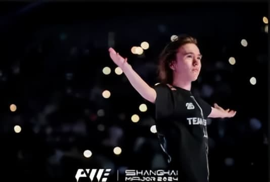
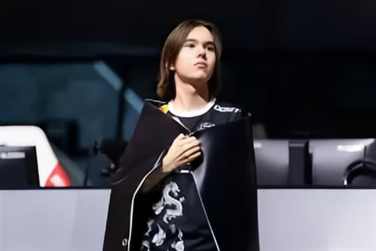
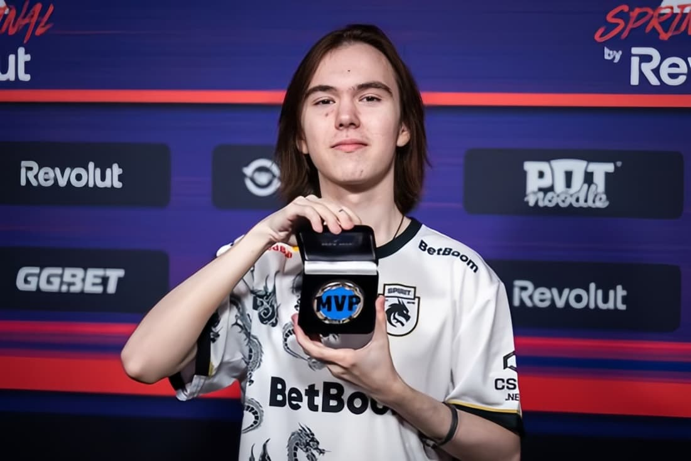

The Prodigy
Danil "donk" Kryshkovets is a professional CS2 player from Russia. In 2024, he took the Counter-Strike world by storm with his phenomenal performance. As an Entry Fragger, his highly aggressive playstyle and unbelievable aim have made him the sharpest spear in Team Spirit's arsenal.
At IEM Katowice and the PGL Major Copenhagen in 2024, he not only led his team to victory but also broke multiple records held by legendary players, becoming the youngest Major MVP in history.
Career Highlights (2024)
1.35
HLTV Rating 2.1
Top 1
HLTV Player of the Year
MVP
PGL Major Copenhagen
17
Years Old (At Major Win)
Highlight Moments

Copenhagen Major
The youngest Major MVP in history. Fearless against FaZe in the grand final.

IEM Katowice
A debut at the peak, lifting the trophy at the iconic Spodek Arena.

Ace vs Top Teams
Multiple breathtaking entry multi-kills against the world's best teams.